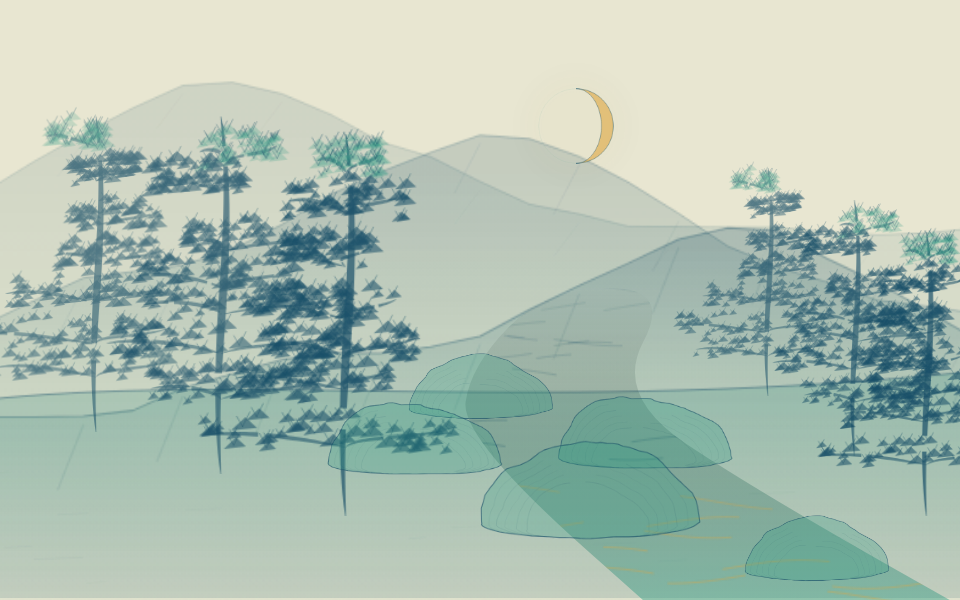
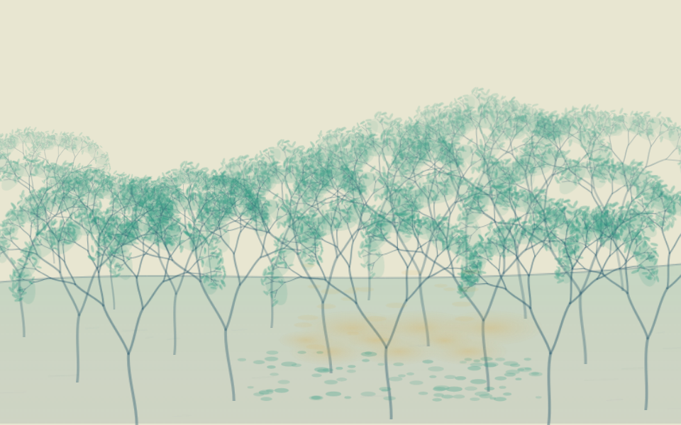
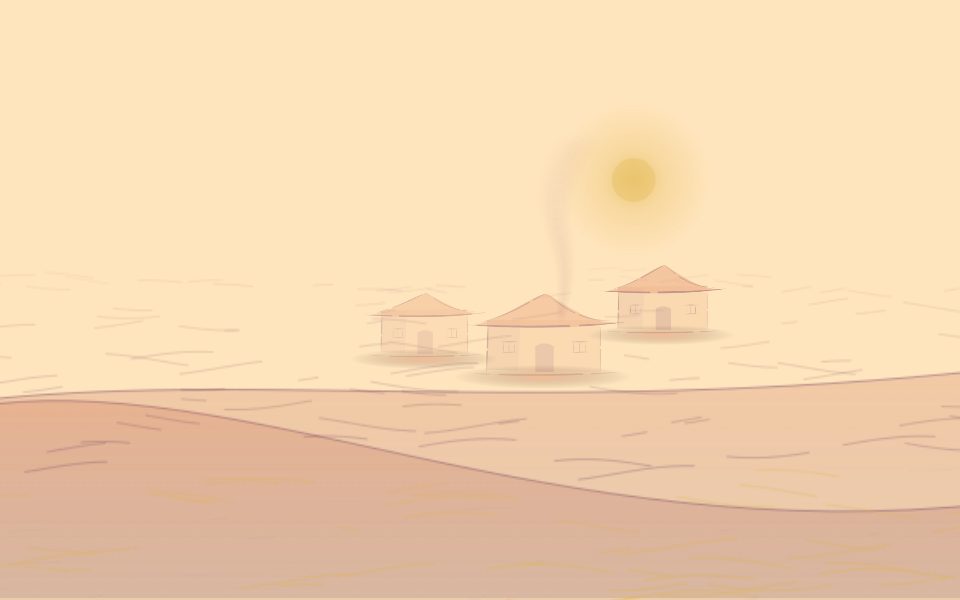
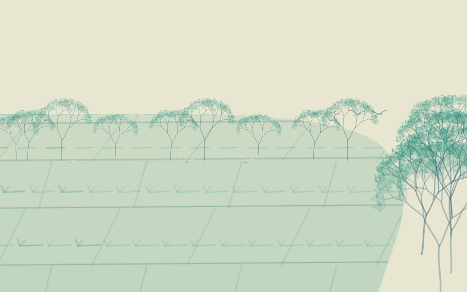

山溪 · 明月松间照，清泉石上流。
王维《山居秋暝》 · 原句出处 · 既有原始校验通过的真实回答
水路贯穿远近，树根落在两岸，溪石与水纹相接。同一份解读、相同显示数量；上图配色为手动观看选择。
与本轮前的同一份解读对照

原始记录 2026-10-23T01-03-54-710Z-efdb6d76；未新增模型调用。布局约束检查只确认已实现规则，画面效果待观看。
同一份诗句解读，尝试三种本地构图。山水、树群、田面与屋舍按远近分层用色，水流、云烟与草木使用不同节奏；人物保持简洁写意。点击图片可直接观看动态图，切换构图、配色与动态均不请求模型。
五份既有真实回答中三份原始校验通过，两份沿用受限的引用范围展开并保留待复核标记。本轮属于同批本地改图，没有新模型调用，也不算独立泛化成绩。
王维《山居秋暝》 · 原句出处 · 既有原始校验通过的真实回答
水路贯穿远近，树根落在两岸，溪石与水纹相接。同一份解读、相同显示数量；上图配色为手动观看选择。

原始记录 2026-10-23T01-03-54-710Z-efdb6d76；未新增模型调用。布局约束检查只确认已实现规则，画面效果待观看。
王维《鹿柴》 · 原句出处 · 既有回答，引用范围展开后重放，解读仍待复核
前后树群错落，透光与苔意共用林间空隙。同一份解读、相同显示数量；上图配色为手动观看选择。

原始记录 2026-10-23T01-04-03-041Z-c3aaf670；未新增模型调用。原始引用失败保留，只机械展开了相邻原句范围，没有改写实体或关系。布局约束检查只确认已实现规则，画面效果待观看。
王维《辋川闲居赠裴秀才迪》 · 原句出处 · 既有原始校验通过的真实回答
房舍成组落地，烟意有源点，水岸承接聚落。同一份解读、相同显示数量；上图配色为手动观看选择。

原始记录 2026-10-23T01-04-11-989Z-dc1950c4；未新增模型调用。布局约束检查只确认已实现规则，画面效果待观看。
柳宗元《江雪》 · 原句出处 · 既有回答，引用范围展开后重放，解读仍待复核
舟与写意人影共用锚点，远岸和雪面保留空间。同一份解读、相同显示数量；上图配色为手动观看选择。
原始记录 2026-10-23T01-04-07-000Z-d3d73dba；未新增模型调用。原始引用失败保留，只机械展开了相邻原句范围，没有改写实体或关系。布局约束检查只确认已实现规则，画面效果待观看。
王维《积雨辋川庄作》 · 原句出处 · 既有原始校验通过的真实回答
田面连续展开，林带分远近，鸟群分布在田面和树冠。同一份解读、相同显示数量；上图配色为手动观看选择。

原始记录 2026-10-23T01-04-19-645Z-f44972c5；未新增模型调用。布局约束检查只确认已实现规则，画面效果待观看。